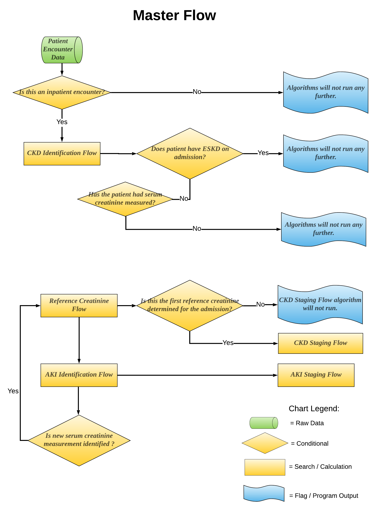

p00_generate_CKD_AKI¶
-
Phenotyping.p00_generate_CKD_AKI(in_dir: str, inmd_dir: str, out_dir: str, race_correction: bool, eid: str, pid: str, out_begin: str, enc_name: str, labs_name: str, diagnosis_name: str, procedure_name: str, crrt_name: str, dialysis_name: str, ssdi_name: str, batch: int)¶ Execute the CKD and AKI phenotyping codes and output the CKD and AKI result for each patient batch by batch.
Creates success file path for each step if not exists
Execute code step by step
- Parameters
in_dir (str) – Source data directory.
inmd_dir (str) – Intermediate data directory.
out_dir (str) – Output files directory.
race_correction (bool) – Indicator for applying race correction functions.
eid (str) – Encounter deidentified id.
pid (str) – Patient deidentified id.
out_begin (str) – Output file begin name.
enc_name (str) – Encounter file name.
labs_name (str) – Labs file name.
diagnosis_name (str) – Diagnosis file name.
procedure_name (str) – Procedure file name.
crrt_name (str) – CRRT file name.
dialysis_name (str) – Dialysis file name.
ssdi_name (str) – Social security death index file name.
batch (int) – Input batch number.
- Returns
- Return type
None.
Notes
- Flow chart for this function:
- 